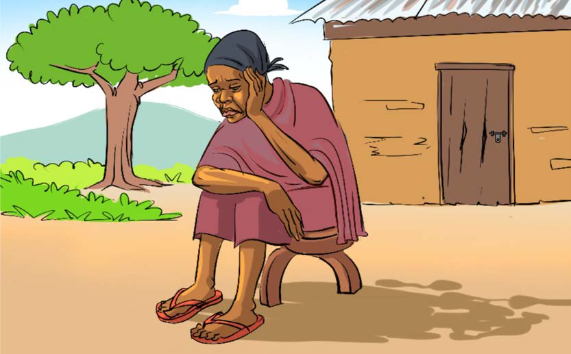

Kuandika hadithi fupi kwa kuzingatia alama
za uandishi
Kuandika hadithi fupi kwa kuzingatia alama
za uandishiZoezi la saba
Nakili hadithi ifuatayo kwa kuzingatia alama za uandishi
zilizotumika.
Bibi Kalulu
Zoezi la sabaNakili hadithi ifuatayo kwa kuzingatia alama za uandishi
zilizotumika.Bibi Kalulu

Bibi Kalulu amekaa kwenye kiti nje ya nyumba yake.
Hapo zamani za kale alikuwapo Bibi Kalulu. Alikuwa
na wajukuu watatu walioishi maeneo tofauti. Bibi
Kalulu aliwakumbuka wajukuu zake. Alijisemea, lo! Nani
atanisaidia kuwajulia hali wajukuu zangu? Bibi alijisemea
tena, ahaa! Nimekumbuka. Nitawaita ndege ili niwatume.
Ndege waliokuja walikuwa Njiwa, Mbuni na Kuku. Njiwa
alisema mimi nitapaa kupeleka barua. Mito, misitu na
milima si tatizo. Mbuni alisema mimi nitakimbia sana.
Kuku naye alisema mimi nitakimbia na kuruka kidogo.
Bibi Kalulu alimchagua Njiwa. Alimpa barua tatu. Njiwa
alizipeleka. Wakati wa kurudi, Njiwa alileta barua za
wajukuu zake. Bibi Kalulu alifurahi sana. Alimpa Njiwa
zawadi ya mtama. Njiwa alikula mtama wote. Aliufurahia
sana mtama kwa utamu wake.
Hapo zamani za kale alikuwapo Bibi Kalulu. Alikuwa
na wajukuu watatu walioishi maeneo tofauti. Bibi
Kalulu aliwakumbuka wajukuu zake. Alijisemea, lo! Nani
atanisaidia kuwajulia hali wajukuu zangu? Bibi alijisemea
tena, ahaa! Nimekumbuka. Nitawaita ndege ili niwatume.
Ndege waliokuja walikuwa Njiwa, Mbuni na Kuku. Njiwa
alisema mimi nitapaa kupeleka barua. Mito, misitu na
milima si tatizo. Mbuni alisema mimi nitakimbia sana.
Kuku naye alisema mimi nitakimbia na kuruka kidogo.
Bibi Kalulu alimchagua Njiwa. Alimpa barua tatu. Njiwa
alizipeleka. Wakati wa kurudi, Njiwa alileta barua za
wajukuu zake. Bibi Kalulu alifurahi sana. Alimpa Njiwa
zawadi ya mtama. Njiwa alikula mtama wote. Aliufurahia
sana mtama kwa utamu wake.
Nakili hadithi kamili ya Bibi Kalulu kwa kuzingatia alama za uandishi; tumia eneo la kuandikia, kibodi au Breli.
Zoezi la nane
Zoezi la nane
Andika hadithi ifuatayo huku ukiweka alama za uandishi
mahali zinapokosekana.
Nyumbu na Swala
Nyumbu na Swala walikuwa marafiki. waliishi katika
msitu mkubwa. Mwaka uliopita, msitu huo ulikumbwa
na ukame Walihangaika sana kutafuta maji Hatimaye,
waliamua kuchimba kisima cha maji. Wakaanza kupata
maji safi kwa matumizi yao Baada ya muda, Swala
alianza tabia ya kuchafua maji Alikuwa anawahi kufika
kisimani. Anachota maji yake, kisha anaweka takataka
kwenye kisima.
Andika hadithi ifuatayo huku ukiweka alama za uandishi
mahali zinapokosekana.Nyumbu na SwalaNyumbu na Swala walikuwa marafiki. waliishi katika
msitu mkubwa. Mwaka uliopita, msitu huo ulikumbwa
na ukame Walihangaika sana kutafuta maji Hatimaye,
waliamua kuchimba kisima cha maji. Wakaanza kupata
maji safi kwa matumizi yao Baada ya muda, Swala
alianza tabia ya kuchafua maji Alikuwa anawahi kufika
kisimani. Anachota maji yake, kisha anaweka takataka
kwenye kisima.